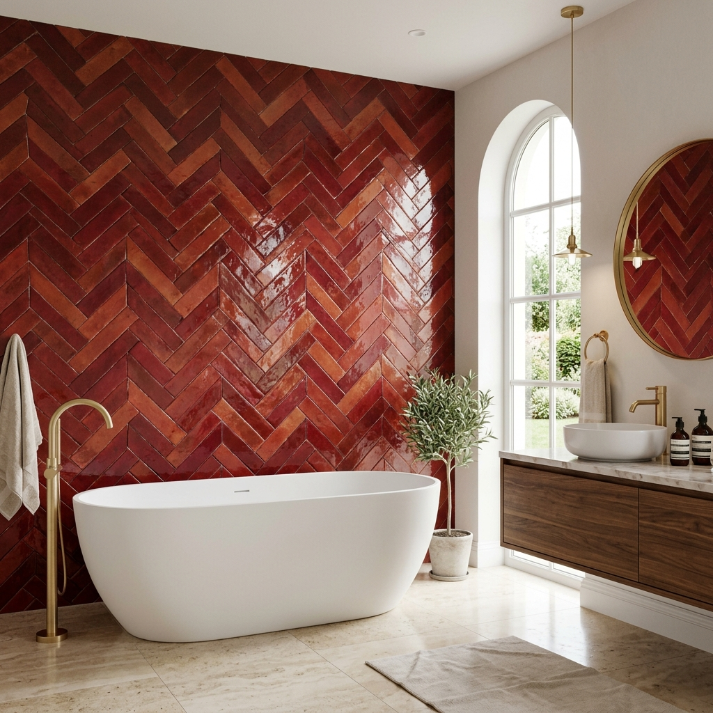
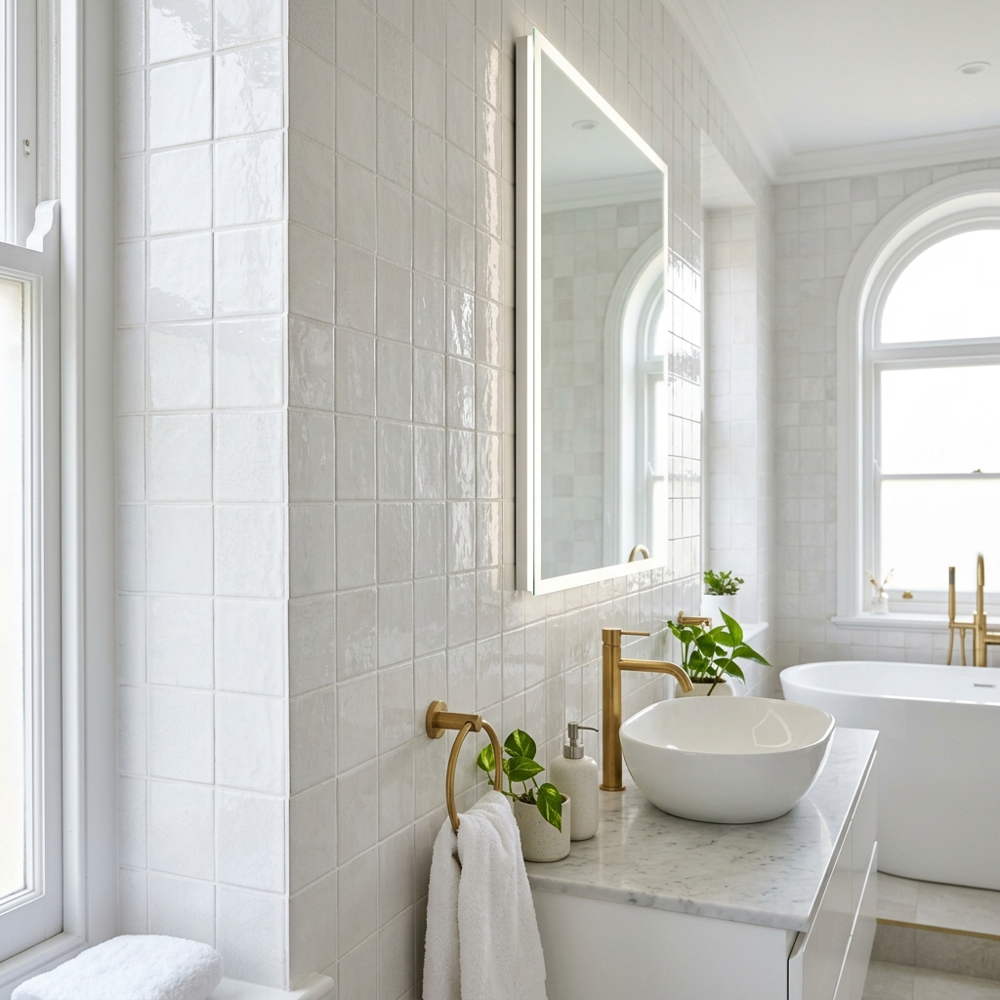

Nos faïences exceptionnelles
Bienvenue dans notre showroom de faïences exceptionnelles! Nous sommes fiers de proposer une collection unique de faïences de qualité supérieure pour tous les goûts et tous les budgets. Notre sélection de faïences en pâte rouge et blanche, aux multiples couleurs est tout simplement époustouflante.
Pâte rouge
Les faïences en pâte rouge sont un type de céramique décorative apprécié depuis des siècles pour leur beauté et leur durabilité. Elles doivent leur couleur rouge distinctive à l’argile riche en oxydes de fer utilisée pour leur fabrication.
Les faïences en pâte rouge sont non seulement de beaux objets décoratifs, mais aussi des témoins précieux de l’histoire et de la culture de leur région d’origine.

Pâte blanche
Les faïences en pâte blanche sont un type de céramique décorative réputé pour leur élégance et leur délicatesse. Elles sont fabriquées à partir d’une argile blanche fine, riche en kaolin, qui leur donne leur couleur claire et leur texture fine.
Les faïences en pâte blanche sont des objets de décoration raffinés et appréciés depuis des siècles, qui apportent une touche de sophistication et de charme à tout intérieur.

Besoin d'un conseil personnalisé ?
Nos experts sont là pour affiner votre choix et vous proposer un chiffrage précis.
Nous rendre visite en showroom